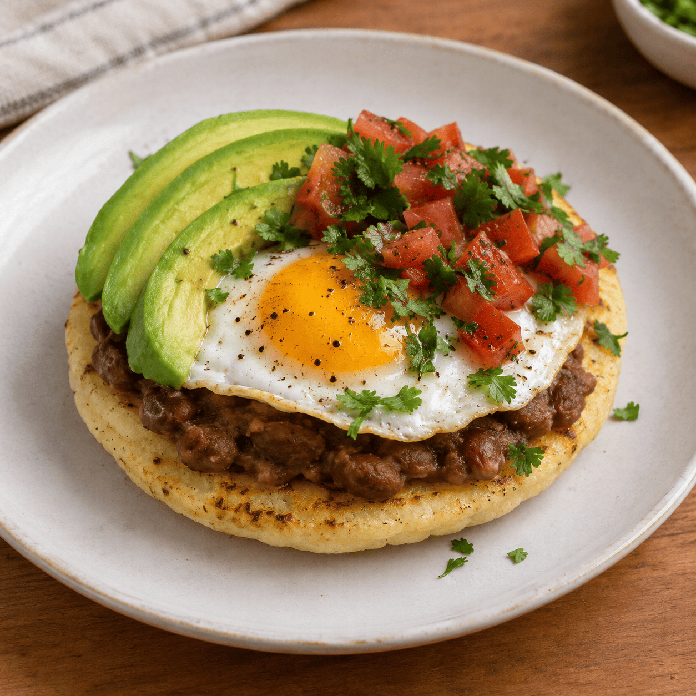
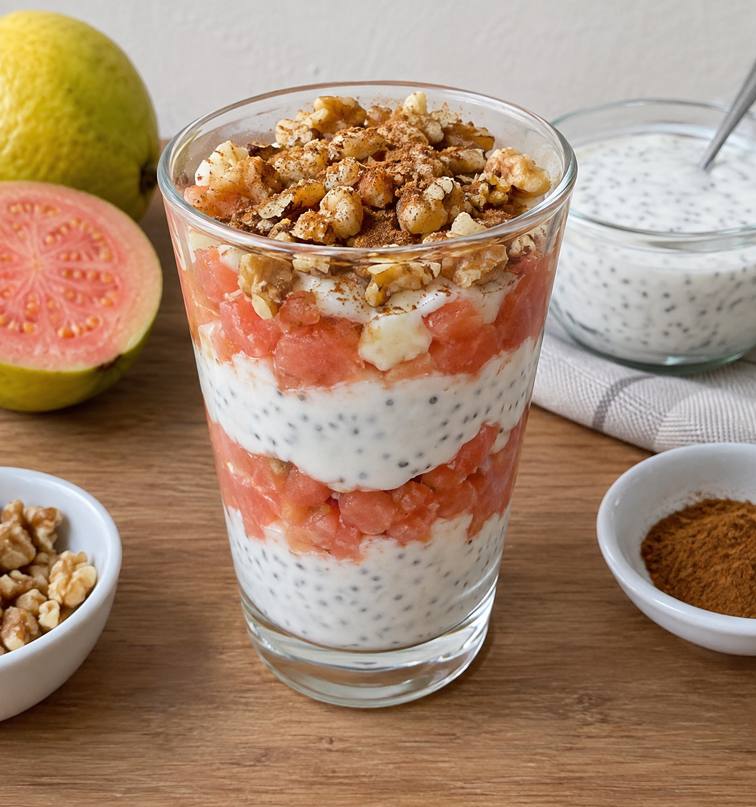
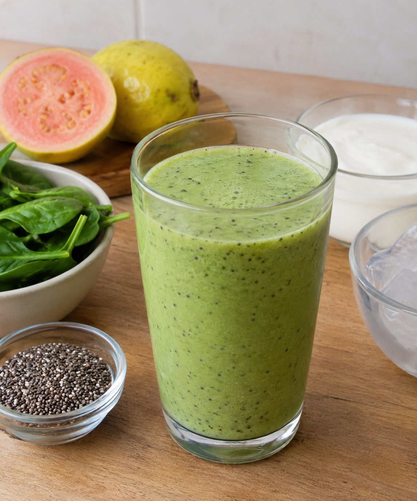
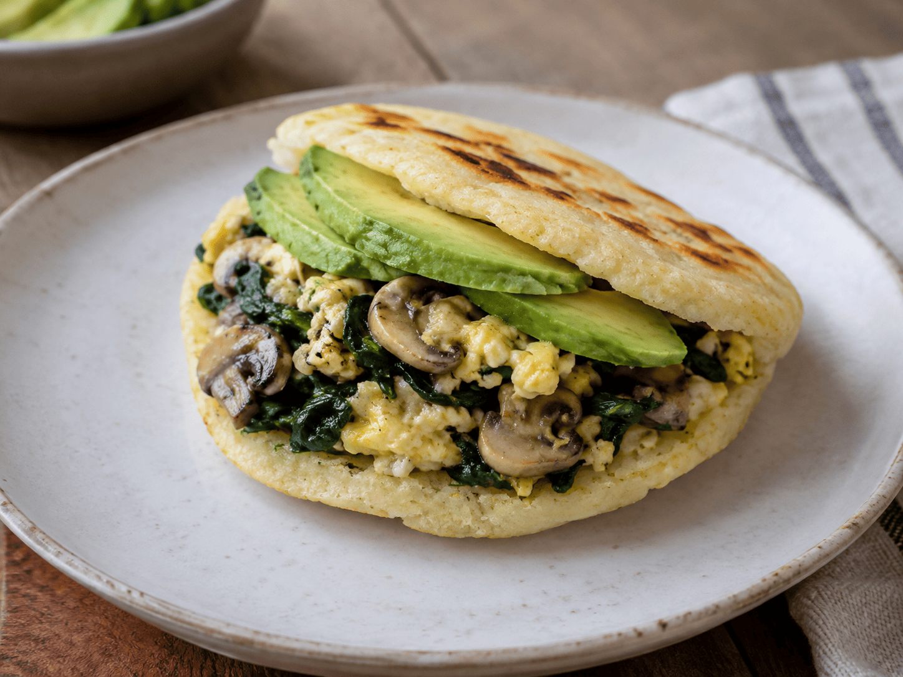
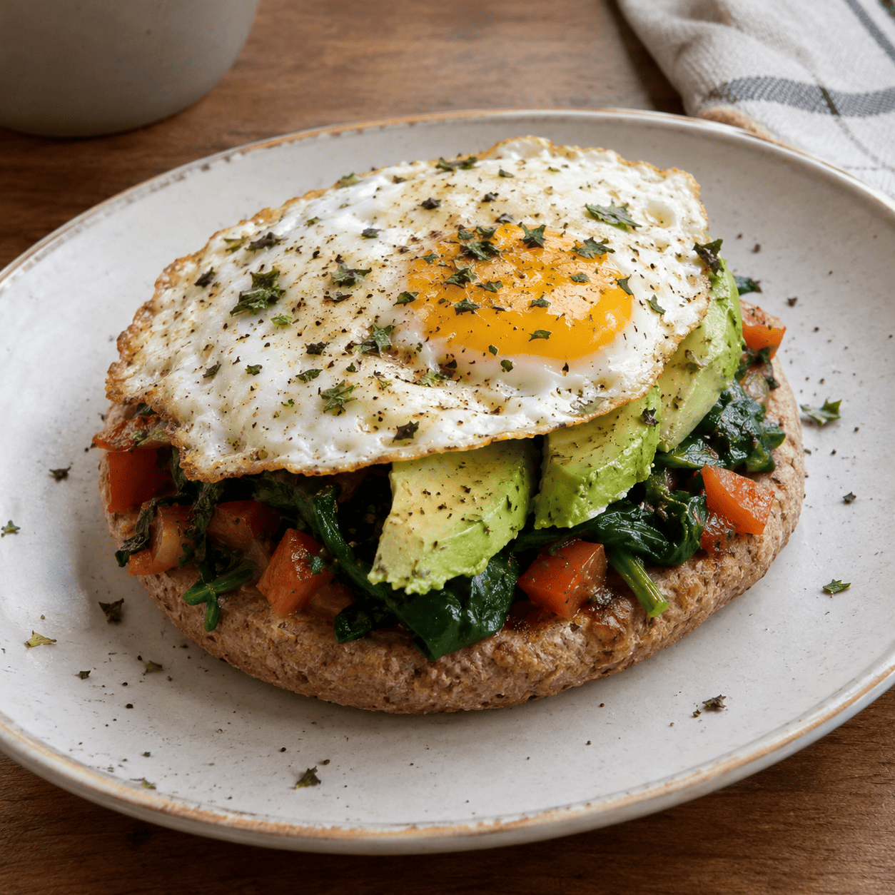
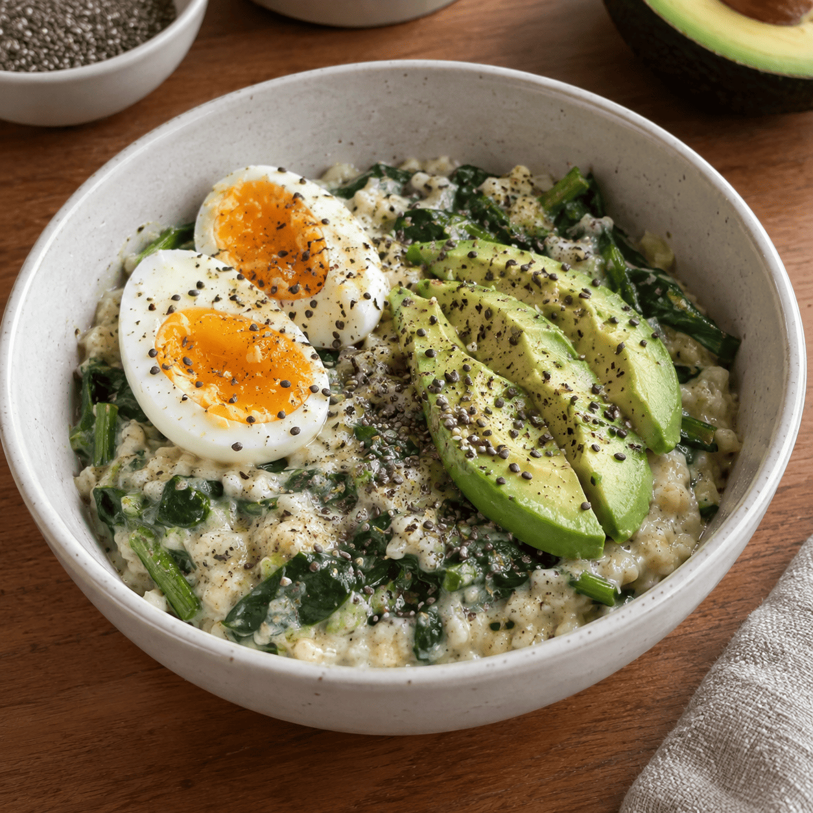
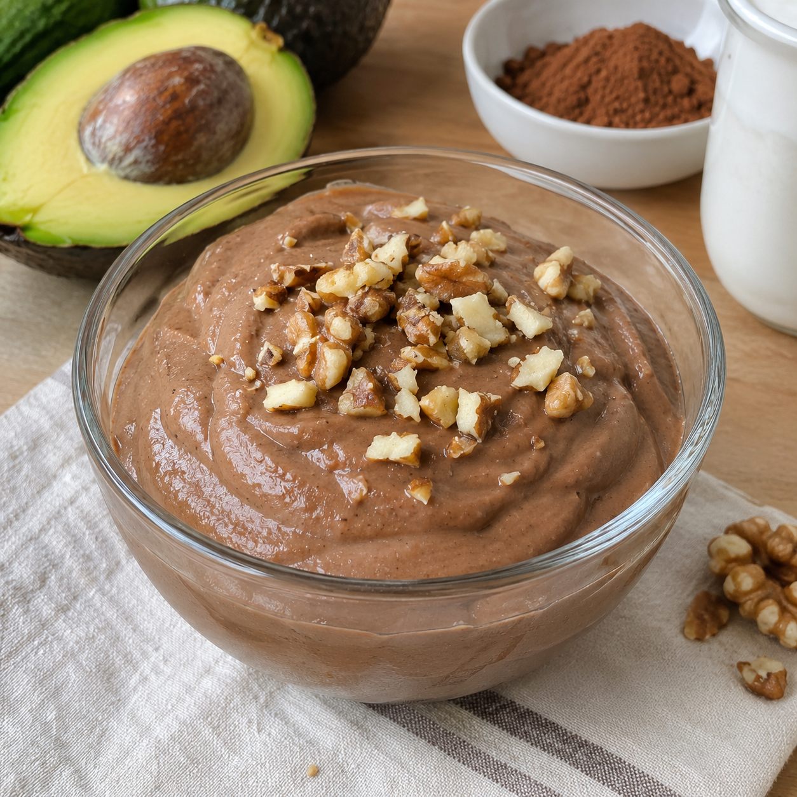
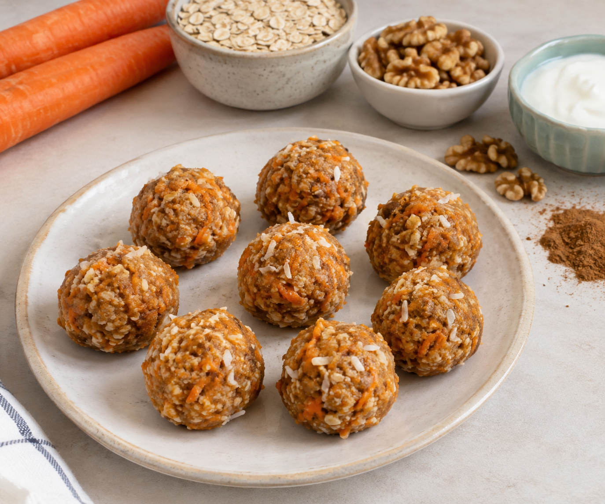
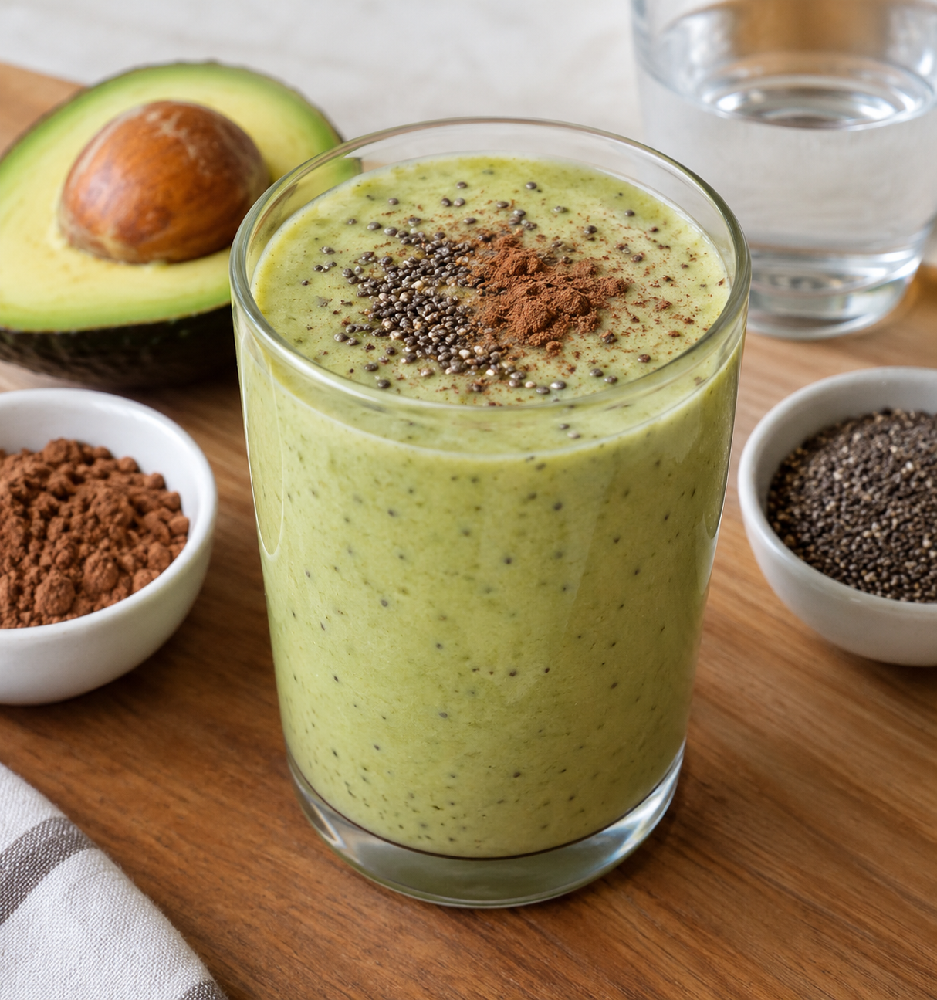
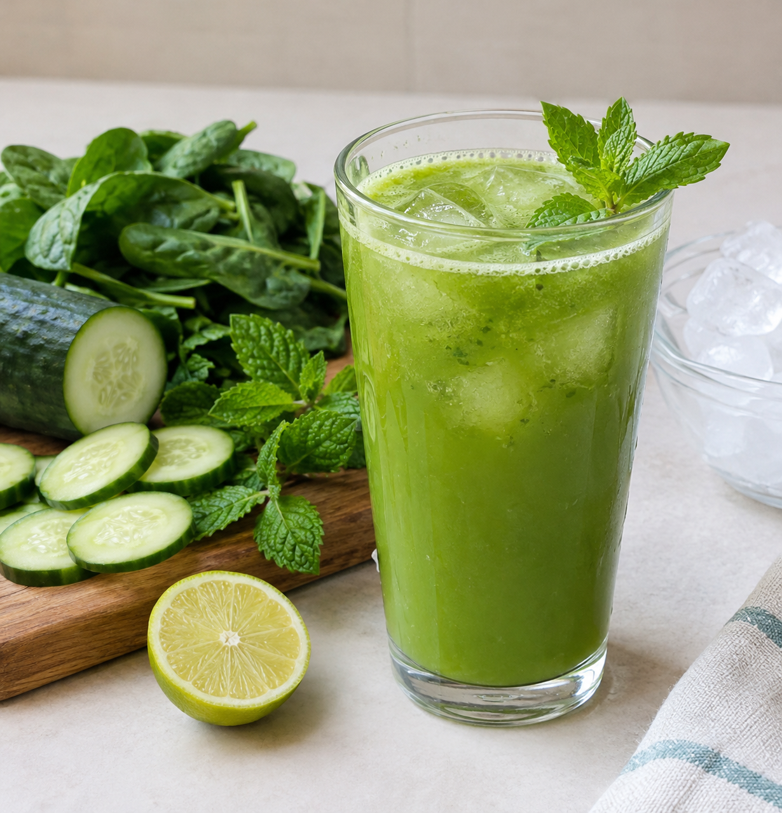

Desayunos
Arepa con fríjol, huevo, aguacate y tomate
Combinación de leguminosas, maíz, aguacate y vegetal fresco.
Salud visual y bienestar integral

⏱️ 15 min • 1 porción

⏱️ 25 min • 1 porción

⏱️ 10 min • 1 porción

⏱️ 5 min • 1 vaso
Combinación de leguminosas, maíz, aguacate y vegetal fresco.

Preparación vegetalmente diversa y nutritiva para iniciar el día.

Maíz integral, hoja verde, huevo y aguacate con luteína.

Fibra y grasas insaturadas en un bowl reconfortante.
Omega-3 y legumbres protectoras de retina.

Nutrición completa rica en omegas y betacarotenos.

Pescado fresco de la región con legumbres y vegetales.

Antioxidantes del pimentón combinados con salmón y lentejas.

Ligera, proteica y excelente para la cena.

Plato fuerte tradicional adaptado con doble leguminosa.
Antioxidantes con textura cremosa y saludable.

Grasas saludables y cacao puro para un postre funcional.

Snacks dulces naturales con betacarotenos y fibra.
Hidratación funcional repleta de vitamina C.

Vitamina A y antioxidantes para la agudeza visual.

Textura sedosa rica en grasas saludables y antioxidantes.

Refrescante, hidratante y depurativa para todo el día.